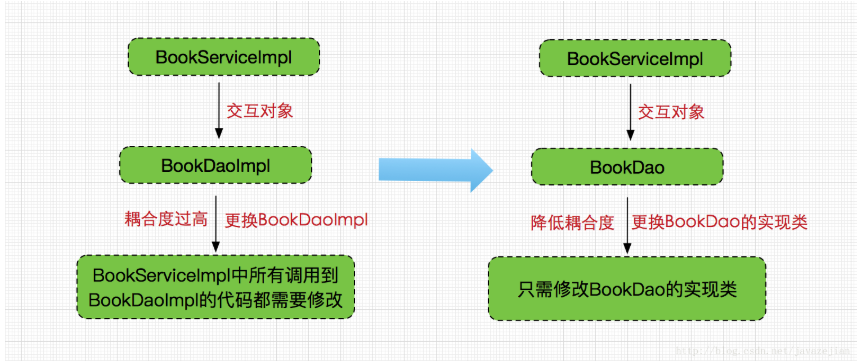
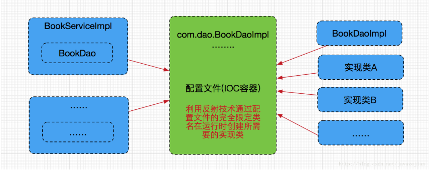

基本概念
- IOC是什么？ IOC(Inversion of Control)控制反转，IOC是一种新的Java编程模式，目前很多轻量级容器都在广泛使用的模式。
- IOC解决了什么问题？ 在IOC出现以前，组件之间的协调关系是由程序内部代码来控制的，或者说，以前我们使用New关键字来实现两组间之间的依赖关系的。 这种方式就造成了组件之间的互相 耦合。IOC(控制反转)就是来解决这个问题的，它将实现组件间的关系从程序内部提到外部容器来管理。 也就是说，由容器在运行期将组件间的某种依赖关系动态的注入组件中。
- IOC的实现方式 1. 依赖查找(Dependency Lookup)：容器中的受控对象通过容器的API来查找自己所依赖的资源和协作对象。这种方式虽然降低了对象间的依赖，但是同时也使用到了容器的API，造成了我们无法在容器外使用和测试对象。 依赖查找是一种更加传统的IOC实现方式。 2. 依赖注入(Dependency Injection)：这就是DI，字面上理解，依赖注入就是将服务注入到使用它的地方。对象只提供普通的方法让容器去决定依赖关系，
- IOC与DI的区别 对于IOC来说，DI更像是一个用来控制容器的工具，之所以依赖，是根据容器里各个组件之间的关系来决定。
- Spring中的IOC和DI IOC是Spring的核心，贯穿始终。对于Spring框架来说，就是由Spring来负责控制对象的生命周期和对象间的关系。 Spring中DI有两种实现方式—Setter方式(传值方式)和构造器方式(引用方式)。
IOC
假设一种情况，我们要做一个图书馆里系统，我们要定义一个书的Bean类，里面有书的id，书名，作者，出版社….等等属性，在一个对象中，如果要使用另外的对象，就必须得到它（自己new一个，或者从JNDI中查询一个），使用完之后还要将对象销毁（比如Connection等），对象始终会和其他的接口或类藕合起来。 而spring中是如何实现的呢？相当于一个图书管理员，它负责管理很多很多书籍的信息，你只需要提供你想要借哪本书、或者说哪种类型的书，那么它就会提供给你，如果不是我们想要的书，我们就抛出异常反馈给它。整个过程不再是我们自己控制的了，我们想要什么书，不用我们去找，也不用我们去造。所有的类都在spring这个容器内登记，我们只需要请求。所有类让spring创建、销毁，也就是说控制对象生存周期的不再是引用它的对象，而是spring。对于某个具体的对象而言，以前是它控制其他对象，现在是所有对象都被spring控制，所以这叫控制反转。 所以由上面看，spring的解决方案就是面向接口的编程，对对象的控制直接调用接口就可以实现了。（前提是配置好了。🙃）
spring跟传统做法的区别:

spring的配置原理图：

DI
IOC的一个重点是在系统运行中，动态的向某个对象提供它所需要的其他对象。这一点是通过DI（Dependency Injection，依赖注入）来实现的。比如对象A需要操作数据库，以前我们总是要在A中自己编写代码来获得一个Connection对象，有了spring我们就只需要告诉spring，A中需要一个Connection，至于这个Connection怎么构造，何时构造，A不需要知道。在系统运行时，spring会在适当的时候制造一个Connection，然后像打针一样，注射到A当中，这样就完成了对各个对象之间关系的控制。A需要依赖Connection才能正常运行，而这个Connection是由spring注入到A中的，依赖注入的名字就这么来的。那么DI是如何实现的呢？Java 1.3之后一个重要特征是反射（reflection），它允许程序在运行的时候动态的生成对象、执行对象的方法、改变对象的属性，spring就是通过反射来实现注入的。
更多关于反射的内容，可以参考JAVA文档
引自文章《Spring核心思想，IoC与DI详解（如果还不明白，放弃java吧）》 《关于Spring IOC (DI-依赖注入)你需要知道的一切》